| |
TPR's Scandinavia Trip
Copenhagen
Sommerland Sjaelland
Bakken
Tivoli Gardens
Bon Bon Land Hansa Park Legoland Billund Djurs Sommerland
Tivoli Friheden Farup Sommerland Tusenfryd Liseberg Skara Sommerland Grona Lund Power Park Sarkanemmi Linnemaki
Well, the bonuses are over and the trip has officially begun. Time to head on the bus to our first park (lovely view of Copenhagen).
 Yay!!! We made it!!!
Yay!!! We made it!!!
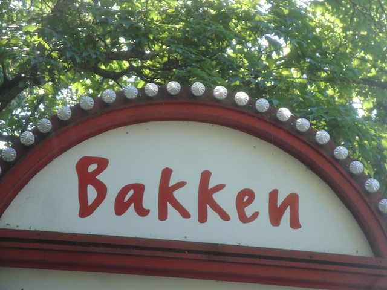
Bakken is reportedly one of the oldest amusement parks in the world, dating all the way back to 1583. Yeah, this park is almost twice as old as the United States. Just let that sink in for a moment.
 All right. Let's get ERT started with Rutschebahn. One of only 5 Scenic Railways left in the world.
All right. Let's get ERT started with Rutschebahn. One of only 5 Scenic Railways left in the world.
First up, we went to the secret maintanence area for a history lesson on the roller coaster, which was very interesting.
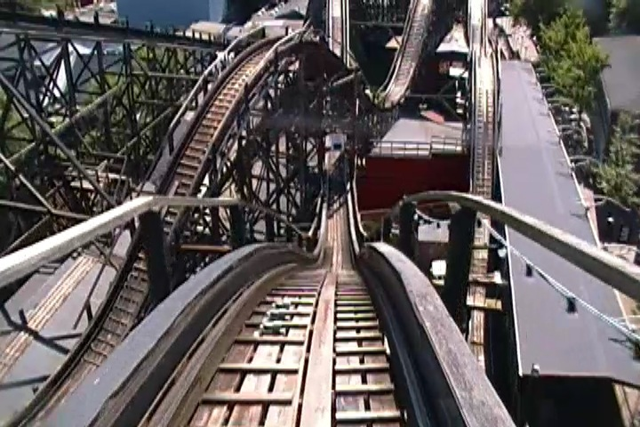
Enough History!! Let's ride!!!
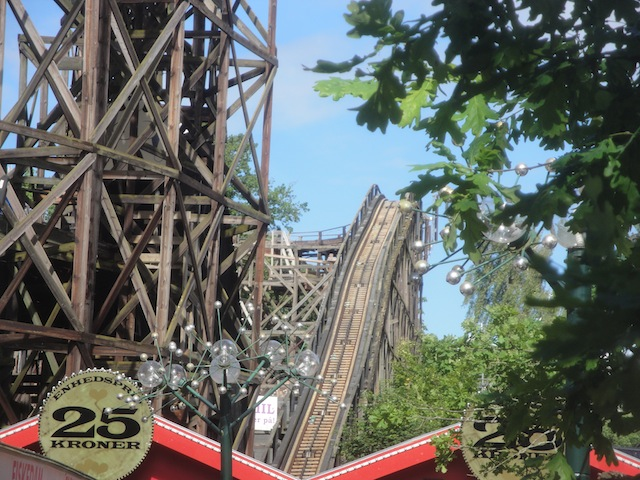
Love the funky non-straight lifthill.
 Now for some bad news about the ride. A couple years ago, they got rid of the original cars with the brakeman you saw in the maintanence area for newer cars with automatic braking, which sort of neutered the ride. =(
Now for some bad news about the ride. A couple years ago, they got rid of the original cars with the brakeman you saw in the maintanence area for newer cars with automatic braking, which sort of neutered the ride. =(
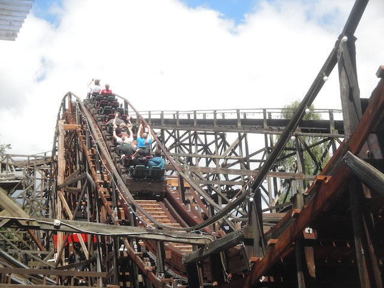
Well, at least the new cars look nice.
 Hey, at least they still kept this, which made me very happy. I know some of my American Friends were quite surprised to hear about this (and this isn't even the most f*cked up thing on the trip). =)
Hey, at least they still kept this, which made me very happy. I know some of my American Friends were quite surprised to hear about this (and this isn't even the most f*cked up thing on the trip). =)
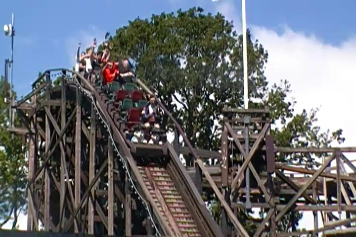
Well, its still a fun ride, even if I was told it used to be much better.
 Rutschebahn may be a historical classic, but this is without a doubt, the star attraction of the park.
Rutschebahn may be a historical classic, but this is without a doubt, the star attraction of the park.
 Do NOT underestimate Tornado. It'll kick your ass and karate chop your neck if you don't brace in time. =)
Do NOT underestimate Tornado. It'll kick your ass and karate chop your neck if you don't brace in time. =)
 I really hope Intamin builds more spinners like this cause it's insane.
I really hope Intamin builds more spinners like this cause it's insane.
Hey look!!! I found Santa Claus!! Don't bother going to the North Pole in the middle of the Arctic Ocean. Just head on over to Bakken.
Let me on the Teacup Carousel!! I have such a great history with these things!!
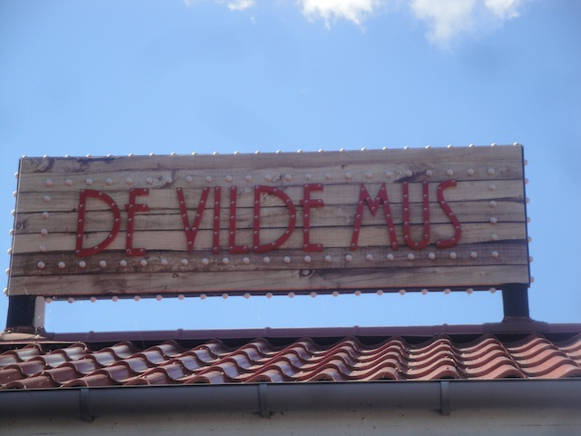
All right. Lets get the other credits, starting out with the low capacity Wild Mouse.
D'oh!! Everyone else stole our idea!!!
 Not a bad Wild Mouse, but I've also ridden better.
Not a bad Wild Mouse, but I've also ridden better.
 Wee!!! Cha-Ching!!!
Wee!!! Cha-Ching!!!
Hey Caesar. How much to eat at your resteraunt?
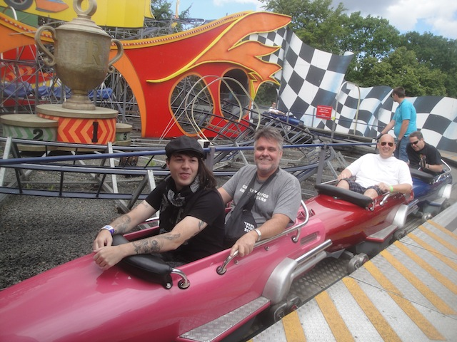
Continuing on with getting credits, we're now onto Racing, which is basically just outdoors Space Mountain.
 Why is this ride called Racing if you're not racing anybody? Are we just racing the other cars on the track?
Why is this ride called Racing if you're not racing anybody? Are we just racing the other cars on the track?
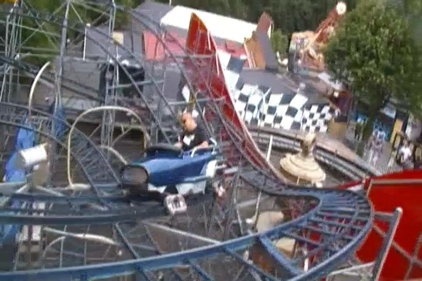
RACE FASTER CAESAR!!! I'M CATCHING UP!!!
 But in all seriousness, it was a fun ride.
But in all seriousness, it was a fun ride.
 Onto Mine Train Ulven, which is basically just outdoors Skull Mountain. Geez, Outdoor Space Mountain, Outdoor Skull Mountain, I think I'm sensing a trend here.
Onto Mine Train Ulven, which is basically just outdoors Skull Mountain. Geez, Outdoor Space Mountain, Outdoor Skull Mountain, I think I'm sensing a trend here.
 Hey, it was a really good ride.
Hey, it was a really good ride.
In case you forgot, Bakken also serves as a local park for those living on the outskirts of Copenhagen.
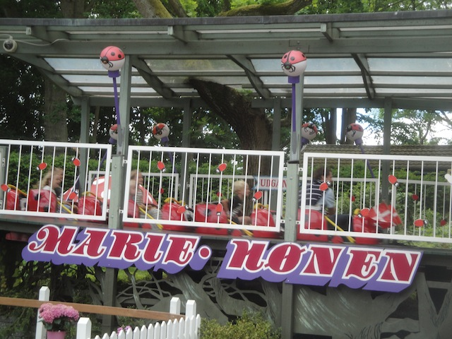
Just one last credit for us to get.
That's right. It's sad and pathetic time over here.
Well, we got the credit. Cha-Ching!!
Well, time to get on the most intersting flat ride in the park. Sky Roller.
This thing has to be the most frustrating ride ever!! I kept trying to get it to flip, but I couldn't get the weight right. It's not like Brain Surge or the 2 person Top Spin where you just let all hell break loose. You gotta get it just right, and I couldn't get the hang of it. Ugh. I need more practice with this ride. =(
 Yeah. I'm in Europe all right.
Yeah. I'm in Europe all right.
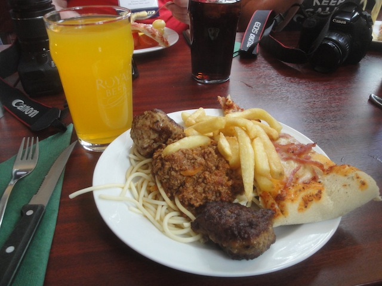
All right. Time for lunch. Lunch was good and...what's that? YES!!! EUROPEAN FANTA IS BACK!!!! Ok, that's actually Miranda, the Pepsi version of European Fanta, but still!!! European Miranda Knock Off > American Fanta!!!
Why yes. I would like dessert as well.
I am determined to eat a waffle at every single park on this trip.
 Time to ride Desperado (the 3D Shooter, not the Arrow Hyper).
Time to ride Desperado (the 3D Shooter, not the Arrow Hyper).
"No need to aim or even keep my eyes open. Just use the force and the targets will come to me."
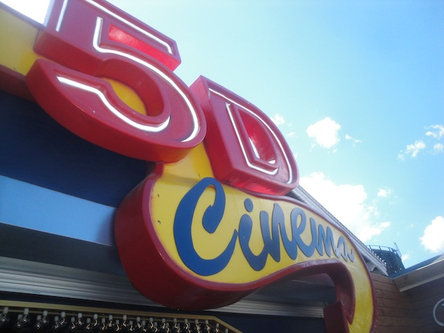
Come on now. Let's go see the 5D Show!!
So we're gonna see a show about going to an island inhabited with dinosaurs that you brought back from the dead. Gee, if only someone had been smart enough to make a movie based off that.
Brooke's favorite park mascot ever.
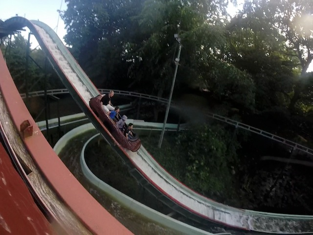
The log ride was fun and all, but the water quality...not the best to say the least.
We were told to come back to Extreme at 3:30 for a special.
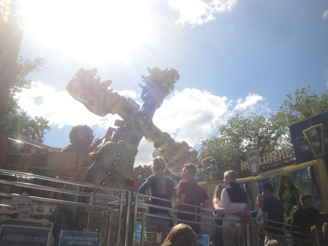
HOLY CRAP!!! THIS THING WAS HAULING ASS!!! I mean, it was all right before, but with the operators giving us their special ride, this went from fun to even better than Tango.
"No. A roller coaster does not go through my vagina. Now quit staring."
BEST SIMULATOR EVER!!!
So glad they have this single riders line so I can get more rides in on Tornado.
Well, I had a great time at Bakken. Thanks for everything.
European Bus Drivers are scarily good at their jobs. I mean, just look at how much room we're squeezing by in!!
And now, time for the most insane part of the day. The Ropes Course.
See how big the building is, yeah. That's how high off the ground we're gonna be.
There was a Heavy Metal Festival, Copenhell going on right next door. I wouldv'e joined them if I wasn't doing the Ropes Course instead.
Yes. For the sake of everyone around you. Please take a dump before you jump.
Just one of the many obstacles to go through on the Ropes Course.
Yeah. This shows you just how high off the ground you are. It's 50 meters (164 ft) above the ground.
Oops. Sorry about that. Thought you were a spider after hearing all about you.
Once you're done with the Ropes Course, you take the series of Ziplines to get down. I really recommend doing this when you're in Copenhagen. It's an amazing experience.
The dinner they served us may not be anything fancy, but it was a good sandwich.
Tivoli Gardens
Home
|